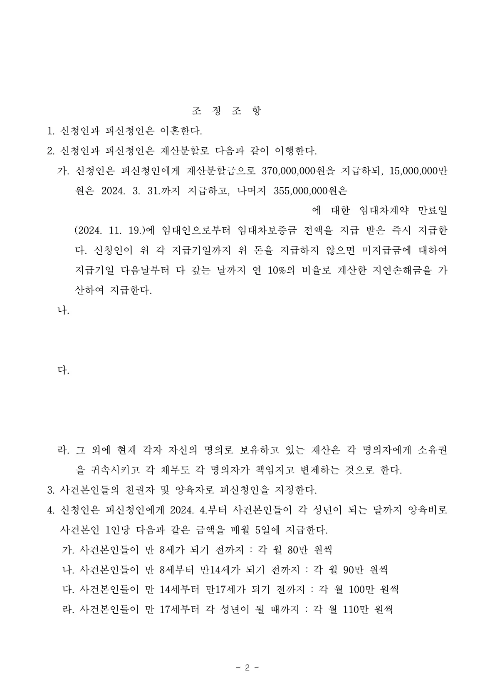
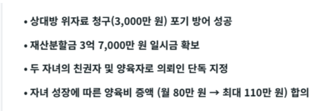

상대방의 위자료 3,000만 원 청구를 방어하고, 재산분할금 3억 7,000만 원 및 두 자녀의 친권·양육권을 성공적으로 확보한 이혼 조정 성립 사례입니다.
안녕하세요. 법률사무소 준일 한석일 변호사입니다.
이혼 소송, 특히 재산분할과 아이들의 양육권이 걸린 문제는 개인의 인생에서 가장 무겁고 힘든 결정 중 하나입니다. 저를 찾아오셨던 의뢰인(아내분)의 간절한 목소리가 아직도 기억에 남습니다.
결론부터 말씀드리면, 상대방의 위자료 청구를 무사히 방어해 내고, 재산분할금 3억 7,000만 원과 두 자녀의 친권 및 양육권을 지켜내며 원만하게 조정을 마무리할 수 있었습니다.
1. 사건의 시작: 위자료 청구 방어와 양육권 확보의 절박함
상대방(남편)은 이혼 청구와 함께 3,000만 원의 위자료를 요구하며 소송을 제기해 온 상황이었습니다. 의뢰인께서는 갑작스러운 소송 제기에 크게 당황하셨고, 무엇보다 어린 두 자녀와 헤어지게 될까 봐 두려워하셨습니다.
이혼 사건에서 재판부의 판결까지 가는 길은 시간도 오래 걸리며 양측 모두에게 깊은 상처를 남기기 쉽습니다. 저는 소모적인 법적 공방을 길게 이어가기보다는, 의뢰인이 가장 중요하게 생각하시는 '자녀의 양육권'과 '안정적인자립 기반(재산분할)'을 확실하게 확보하는 방향으로 조정에 임하는 것이 최선이라고 판단했습니다.
2. 변호사의 역할: 객관적 사실에 기반한 진정성 있는 조정 전략
이혼 조정은 감정이 격해진 양측의 입장을 조율해야 하므로 무조건 언성을 높이거나 강하게 주장한다고 해서 해결되지 않습니다. 저는 있는 그대로의 객관적인 사실을 바탕으로, 재판부와 조정위원에게 의뢰인의 입장을 차분하고 명확하게 전달하는 데 역량을 집중했습니다. 먼저, 평소 의뢰인이 자녀들과 애착 관계가 깊고, 주 양육자로서 헌신해 왔음을 담백하지만 호소력 있게 설명하여 친권과 양육권의 당위성을 주장했습니다. 또한 부부의 공동 재산 형성에 기여한 바를 과장 없이 입증하고, 아이들이 커가면서 늘어나는 양육비를 현실적으로 반영하여 연령 구간별로 증액되는 양육비 지급 기준을 마련하여 제시했습니다.
3. 결과: 재산분할 3억 7천만 원, 친권·양육권 확보

조정 결과, 상대방은 본인의 위자료 청구를 포기하였습니다. 대신 의뢰인은 3억 7,000만 원을 재산분할로 지급받게 되었으며, 가장 간절히 원하셨던 두 자녀의 친권자 및 양육자로 지정되었습니다. 단순히 판결로 끝나는 것이 아니라, 원만한 조정을 통해 의뢰인께서 조기에 일상을 회복하고 아이들과의 안정적인 내일을 준비할 수 있게 되어 변호사로서도 큰 보람을 느낀 사건이었습니다.
어려운 상황에 처해 계신가요? '무조건 이긴다', '완벽하게 해내겠다'는 화려한 말로 현혹하지 않겠습니다. 다만,의뢰인의 삶을 깊이 들여다보고, 최악의 상황에서도 가장 현실적이고 최선의 결과를 만들어 내기 위해 변호사로서 할 수 있는 모든 노력을 다하겠습니다. 묵묵히, 그러나 든든하게 그 곁을 지키겠습니다.
※ 구체적인 사건은 사실관계에 따라 달라질 수 있습니다.

 한석일 대표변호사
한석일 대표변호사